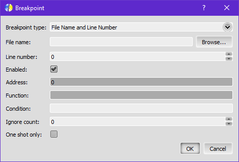

Menu Debug
The Debug menu is used to launch the engine using a debugger. This allows easy and real-time inspection of in-game variables directly from the engine's memory.
Debugging also allows you to make the engine stop execution at points defined by breakpoints, so you can track bugs easely and faster.
Fighter Factory Studio doesn't come with a general purpose debugger. This function is provided by the engine's module, so the available feature set is subject to change based on each engine implementation.
There's two supported modes of operation:
- Traditional debugging: the engine itself is launched and debugger directly manipulates its memory and execution;
- Emulator: an engine-compatible environment runs inside Fighter Factory. This allows even faster debugging and enables all feature set.
While a debugger is active, the right panel on text editors is set to the Debug panel. This panel displays a live snapshot of in-game variables, or the current state of these if you pause execution.
Start on engine
Starts the engine using the debugger, in traditional debugging mode.
Start emulator
Use the Emulator as a debugger, in built-in engine debugging mode.
Interrupt
Pauses engine execution.
Continue
Resumes engine execution.
Stop
Stops engine execution. This ends the debug session.
Restart
Stops and restart engine execution. This fully resets the debug session.
Step over
While the debugger is in interrupt state, executes next instruction and interrupts execution again, without entering into functions.
Step into
While the debugger is in interrupt state, executes next instruction and interrupts execution again, entering into functions.
Step out
While the debugger is in interrupt state, executes all next instructions in the current function and interrupts execution again, right outside that function.
Step frame
While the debugger is in interrupt state, executes every instruction till next frame starts.
Code toolbar
Defines the visibility of the Code toolbar. This toolbar contains the code snippet system and a syntax error navigation list.
Toggle breakpoint
Activate/deactivate a breakpoint in the current line on the active code editor.
Add breakpoint
Adds a new breakpoint. This opens a dialog to setup all supported breakpoint modes.
Breakpoint type:
- File Name and Line Number: Adds a breakpoint to interrupt execution before this line gets executed. You can set breakpoints to any file, even it's not currently opened in any editor. You must use the fields "File name" and "Line number".
- Function Name: Adds a breakpoint to interrupt execution before the function is executed. You must use the Function field to define the desired one.
- Break on Memory Access: Adds a breakpoint to interrupt execution after the data at specified address is modified. You must use the Address field. This type of breakpoint can be easely set by right-clicking a variable in the Debug panel and choosing "Add data breakpoint".
- Break on frame: Adds a breakpoint to interrupt execution before the next frame starts.
Enabled: Defines if the breakpoint is currently enabled or not.
Condition: Only interrupts execution if this condition is met. This rely on debugger support.
Ignore count: Anytime conditions are met, decrease this counter and only triggers the breakpoint when it reaches zero.
One shot only: Trigger this breakpoint only once.